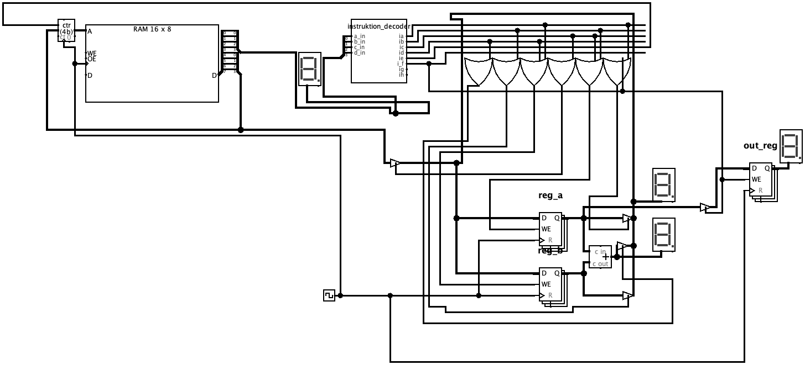

HOME
This is my NI_CPU project.
here you can see my recent public updates on NI_CPU.

NI-CPU E
NI-CPU E is my newest and best cpu yet.
By offical spec it´s 8 bit but i am working on an 3d infinitely expandable.
For the first time ever i have made an assembly language(ni-script).(you can find it below the text)
You can also find documentation on the assembly language (ni-script)
ni-script tutorial
CPU-E emulator
ni-script compiler
outdated CPU´s
NI-CPU 3/4

this is its logic design

This is my NI_CPU 3 ¾.
its a 4 bit cpu with a 3 bit address bus.
the address and data bus are separated